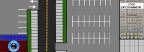

Scott the Intern
Playable game on Xbox or PC! Written in C# using XNA framework 3.0 this game makes use of the 2D environment made by stitching together sprite sheets. Gameplay is similar to that of Zelda for free world movement. But the battles are handled like Final Fantasy! Handled using turn-based system with attacks like slaps and coffee bombs! This was a fun project made with a team of 5 and we covered everything from graphics, save states, to audio playbacks. Learned a great deal about software development with a team and an ever growing respect for game developers ever since. I take you 8-bit games for granted no more! Check out the source code here.

